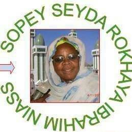
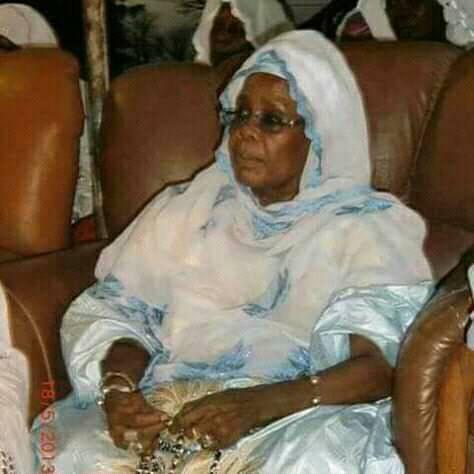
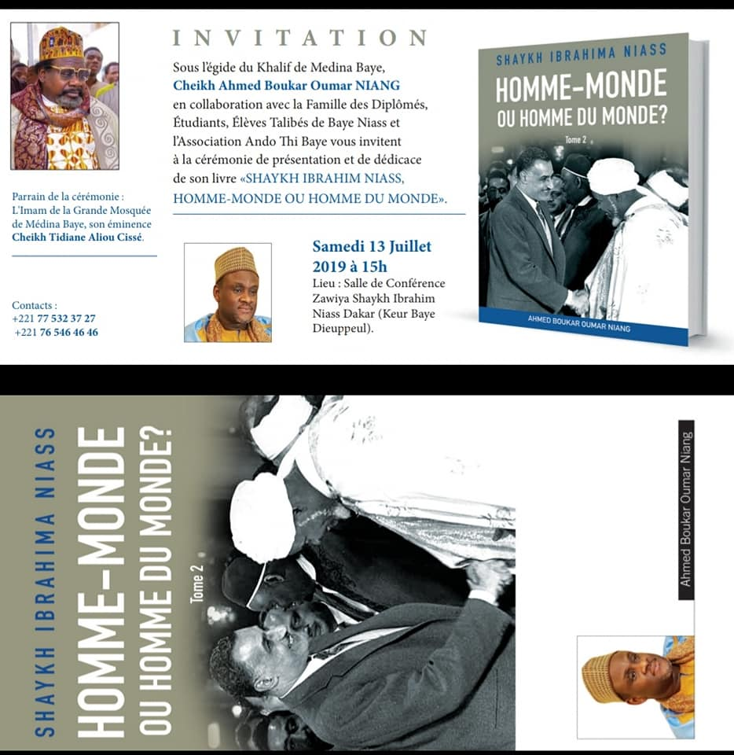
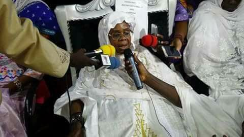

Le DAHIRA SOPEY SEYDA ROKHAYA est un mouvement religieux regroupant l'ensemble des disciples de CHEIKHA ROKHAYATOU IBRAHIMA NIASS. Le siège sociale se trouve à médina baye kaolack.
 Dans sa recherche des nombreux bienfaits procurés par le maouloud al naby communément appelé "GAMOU" le DAHIRA SOPEY SEYDA ROKHAYA NIASS on uni leur éfforts en direction de ce grand événement religieux qui commémore la naissaice du prophète MOHAMED "PSL". ils ont choisi le troisième jour aprés le gamou pour commémorer le zihara annuelle qu'ils effectuent dans l'enceinte de la maison de cheikha rokhaya bintou cheikh ibrahima niass. Cette action de grande envergure consiste ainsi de réunir tous les disciples de seyda rokhaya ibrahima niass en guise de lui octroyée un grand cérémonie de zihara.Toujour dans sont fameux programme le dahira mène chaque année au mois de ramadan "un soukarou kor". il sagit encore une visite de courtoisie à notre chère cheikha rokhayatou.
 